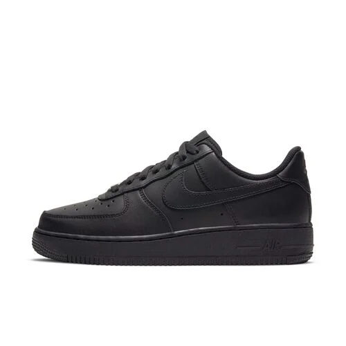

ZAPATILLAS
CATÁLOGO:
Zapatillas NIKe:
La historia de las zapatillas Nike comenzó en 1964 como Blue Ribbon Sports, fundada por Phil Knight y Bill Bowerman, para importar y vender zapatillas japonesas de alta calidad, como las Onitsuka Tiger. En 1971, la empresa se renombró a Nike y creó su famoso logotipo Swoosh. Su primer modelo fue la "Lunar Shoe" en 1972, y la marca revolucionó el calzado deportivo con innovaciones como la cámara de aire en las Air Tailwind y Air Force 1, consolidándose como líder mundial en la industria.
Zapatillas FILA:
Fila es una marca italiana de origen en Biella, fundada en 1911 por los hermanos Fila, inicialmente fabricando ropa interior y prendas para los Alpes italianos. La marca pasó a producir ropa deportiva y, en 1970, lanzó su línea "White Line" para el tenis, patrocinando a Björn Borg, lo que impulsó su reconocimiento. Tras pasar por diferentes propietarios, Fila Korea adquirió la marca globalmente en 2007, lo que la revitalizó y la impulsó hacia el mundo de la moda y la cultura popular, especialmente con modelos como las Fila Disrupto